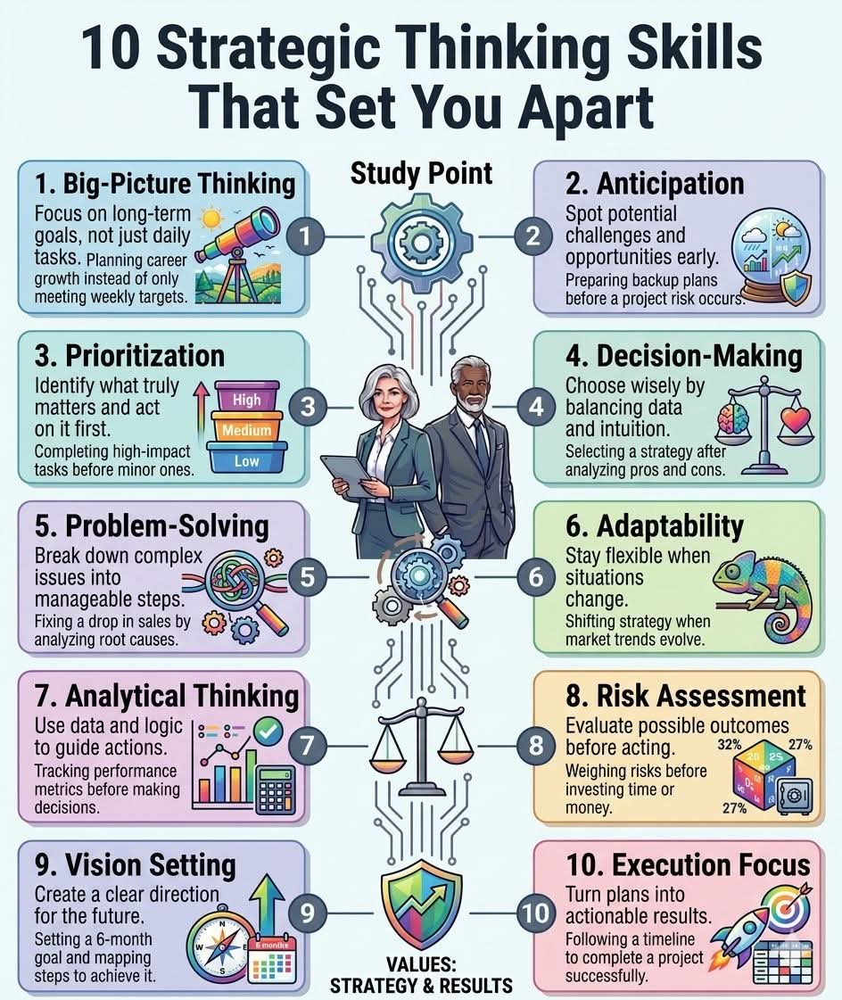

Manuver Langit Dago
Dinginnya udara pagi di wilayah Dago Atas tidak mampu menembus lapisan kaca temper yang mengelilingi ruang operasional Parahyangan Quant. Di dalam sana, deru halus server dan pendaran layar monitor menciptakan atmosfer yang berbeda dari ketenangan eksterior Kota Bandung. Tiga sosok berdiri di depan dinding digital yang menampilkan matriks kompleks pergerakan modal global. Mereka bukan sekadar pedagang saham; mereka adalah arsitek risiko yang mendalami teknik industri finansial dengan presisi matematis.
Arya, sang pendiri fund, menatap grafik tahunan yang membentang lebar. Sebagai seorang veteran pasar dengan latar belakang teknik, ia selalu menekankan pentingnya melihat melampaui riak harian. "Jangan terjebak dalam fluktuasi menit ini," ucapnya pelan namun berwibawa. "Fokuslah pada tujuan jangka panjang. Kita sedang merancang pertumbuhan karier dan portofolio yang berkelanjutan, bukan sekadar mengejar target mingguan yang semu."
Di sebelah kanan Arya, Citra menyesap espresso pahitnya. Sebagai Chief Investment Officer, ia memiliki reputasi sebagai wanita paling tajam dalam menganalisis makroekonomi di lingkaran finansial Jawa Barat. Citra adalah lulusan terbaik di angkatannya, dan kemampuannya dalam mensintesis data industri ke dalam strategi hedge fund telah membuatnya menjadi legenda di gedung perkantoran Jalan Asia Afrika hingga kawasan Dago.
"Saya sudah melihat pola ini sebelumnya," Citra memotong kesunyian. "Kita harus melakukan antisipasi. Deteksi potensi tantangan ini lebih awal. Inflasi di sektor manufaktur akan memberikan tekanan pada emiten perbankan kita. Saya sudah menyiapkan rencana cadangan sebelum risiko proyek ini benar-benar terjadi." Ia kemudian menggeser jarinya di atas tablet, menyusun ulang daftar tugas tim. "Mari kita lakukan prioritas. Identifikasi apa yang benar-benar penting dan bertindaklah di sana lebih dulu. Selesaikan tugas-tugas berdampak tinggi sebelum kita menyentuh hal-hal minor."
Bima, analis kuantitatif paling muda namun paling jenius di tim itu, hanya mengangguk sambil jemarinya terus menari di atas keyboard mekanik. Ia sedang menjalankan skrip Python yang mengintegrasikan API TradingView dengan model internal mereka. Bima adalah tipe orang yang bisa melihat algoritma di balik setiap kekacauan pasar.
"Data menunjukkan divergensi pada RSI dan MACD," ujar Bima tanpa menoleh. "Tetapi saya setuju dengan Ibu Citra, intuisi pasar juga memberikan sinyal yang berbeda. Kita harus memilih dengan bijak dengan menyeimbangkan data dan intuisi. Ini adalah pengambilan keputusan yang murni. Saya menggunakan pemikiran analitis, melacak metrik kinerja secara logis sebelum kita menarik pelatuk pada posisi ini."
Tiba-tiba, alarm merah berkedip di salah satu terminal. Ada penurunan tajam pada indeks obligasi negara yang dipicu oleh berita politik mendadak. Ruangan yang tadinya tenang berubah menjadi medan perang intelektual.
"Terjadi pemecahan masalah secara instan," Arya memberikan instruksi. "Pecah masalah kompleks ini menjadi langkah-langkah yang bisa dikelola. Bima, cari akar penyebab penurunan ini melalui analisis data aliran modal. Citra, kita perlu adaptabilitas. Tetaplah fleksibel saat situasi berubah. Jika tren pasar berevolusi, kita geser strategi kita tanpa ragu."

Waktu menunjukkan pukul sepuluh pagi, saat pasar sedang dalam kondisi paling volatil. Di luar, kemacetan Bandung mulai terlihat di sepanjang jalan menuju Lembang, namun di dalam Nexus Quant, fokus tetap terkunci pada satu tujuan: perlindungan nilai ekuitas klien mereka.
Citra menahan langkah Bima yang hendak melakukan pembelian besar. "Tunggu. Lakukan penilaian risiko. Evaluasi kemungkinan hasil sebelum bertindak. Timbang risikonya sebelum kita menginvestasikan waktu dan modal yang lebih besar. Apakah kita sudah menghitung potensi kerugian maksimum?"
Bima menjalankan simulasi Monte Carlo dalam hitungan detik. Hasilnya keluar: probabilitas keberhasilan 68 persen. Dalam dunia hedge fund, angka itu sudah cukup untuk bergerak, asalkan dikelola dengan disiplin baja.
"Ingat pengaturan visi kita," Arya mengingatkan saat mereka bersiap mengeksekusi manuver terakhir. "Ciptakan arah yang jelas untuk masa depan. Target enam bulan kita tetap sama, jangan biarkan kebisingan pagi ini mengaburkan peta jalan yang sudah kita bangun." Ia menekan tombol otorisasi pada konsol utamanya. "Sekarang, fokus pada eksekusi. Ubah rencana ini menjadi hasil yang nyata. Ikuti timeline yang sudah kita tetapkan untuk menyelesaikan operasi ini dengan sukses."
Order dikirimkan. Ribuan lot berpindah tangan dalam milidetik. Di layar, posisi merah perlahan mulai stabil dan berubah menjadi hijau zamrud yang menenangkan. Manuver di langit Dago telah berhasil. Ketiganya bersandar di kursi masing-masing saat cahaya matahari Bandung mulai menerangi ruangan sepenuhnya, mencairkan ketegangan yang sempat memuncak.
Di dunia finansial yang kejam, kecerdasan tanpa strategi hanyalah keberuntungan yang tertunda. Namun bagi tim Nexus Quant, setiap langkah adalah tarian antara logika teknik dan visi strategis yang tak tergoyahkan.